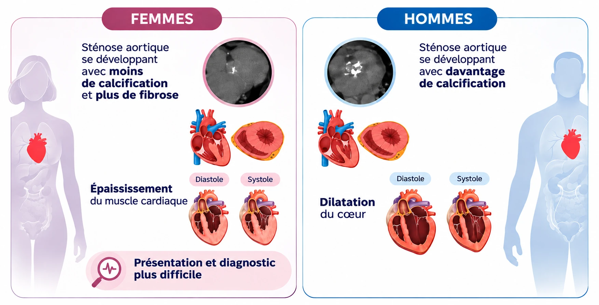
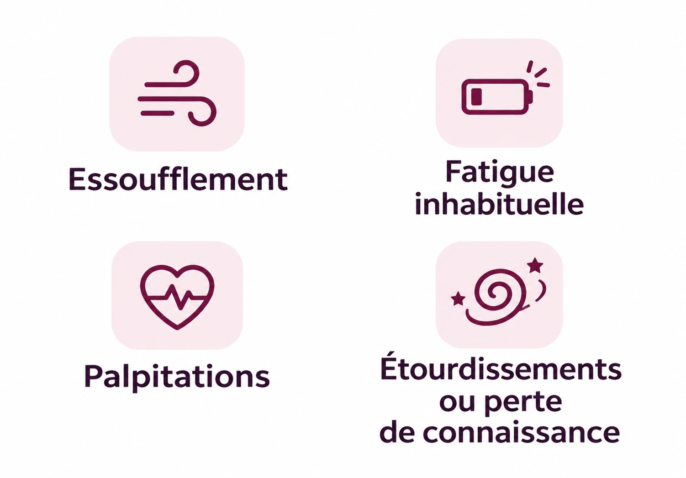
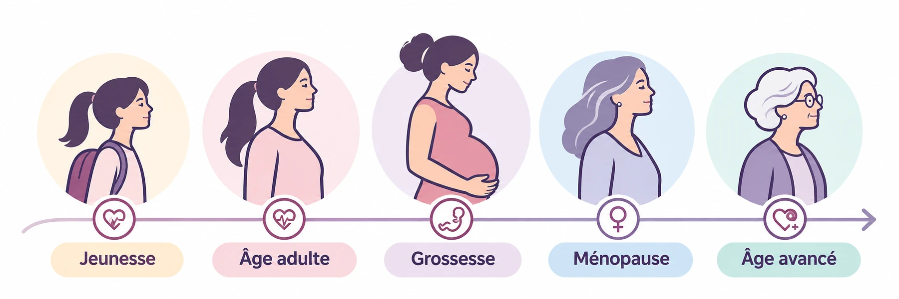

Les maladies des valves cardiaques, aussi appelées valvulopathies, touchent aussi bien les femmes que les hommes. Pourtant, elles ne se développent pas toujours de la même manière, ne se manifestent pas nécessairement par les mêmes symptômes et peuvent nécessiter des approches diagnostiques et thérapeutiques différentes.
Pendant longtemps, la recherche cardiovasculaire a principalement été réalisée chez les hommes. Nous savons aujourd'hui que certaines de ces connaissances ne peuvent pas être directement transposées aux femmes.
Mieux comprendre ces différences est essentiel pour détecter les maladies plus tôt, améliorer leur prise en charge et offrir à chaque femme des soins adaptés.
1. Des maladies qui touchent aussi les femmes
Contrairement aux idées reçues, les maladies cardiovasculaires, y compris les maladies valvulaires, ne sont pas principalement des maladies masculines.
Près de la moitié des personnes ayant reçu un diagnostic de maladie valvulaire sont des femmes. Toutefois, la fréquence des différentes maladies varie selon le sexe et l'âge.
47 % des diagnostics de maladies valvulaires concernent des femmes.
60 % des personnes atteintes de régurgitation tricuspide modérée ou sévère sont des femmes.
- La sténose aortique touche les deux sexes, davantage d'hommes chez les patients de moins de 50 ans et possiblement davantage de femmes après 50 ans.
- La régurgitation aortique est plus fréquente chez les hommes.
- La régurgitation mitrale touche les deux sexes, mais ses causes sont différentes.
- La régurgitation tricuspide touche davantage les femmes.
Les maladies valvulaires peuvent toucher les femmes à toutes les étapes de leur vie, même si leur fréquence augmente avec l'âge.
2. Des valves et un cœur qui réagissent différemment
Les valves cardiaques ne se détériorent pas de la même façon
Les mécanismes biologiques responsables des maladies valvulaires peuvent différer entre les femmes et les hommes.
La sténose aortique en est un excellent exemple. Cette maladie se caractérise par un épaississement et une rigidification progressive de la valve aortique, qui limitent son ouverture.
Pour une même sévérité de la maladie :
- chez les hommes, la valve présente généralement davantage de dépôts de calcium (calcification) ;
- chez les femmes, la valve présente généralement davantage de tissu fibreux (fibrose) et moins de calcium.
Une valve peut donc être sévèrement malade chez une femme même si elle contient relativement peu de calcium.
À l'inverse, les dépôts de calcium autour de la valve mitrale, appelés calcification de l'anneau mitral, sont plus fréquents et souvent plus importants chez les femmes.
Ces observations démontrent que les mécanismes biologiques des maladies valvulaires sont complexes et que le rôle du sexe peut varier d'une valve à l'autre.
À l'heure actuelle, il n'existe aucun médicament capable de ralentir ou d'arrêter la progression des maladies valvulaires. Lorsque la maladie devient sévère et nécessite une intervention, seules les interventions chirurgicales ou par cathéter permettent de réparer ou de remplacer la valve malade.
C'est pourquoi il est essentiel de comprendre les différences entre les femmes et les hommes dans le développement de ces maladies. Une meilleure connaissance de ces mécanismes biologiques pourrait ouvrir la voie à de nouveaux traitements, mieux adaptés aux femmes comme aux hommes.
Le cœur des femmes s'adapte différemment
En moyenne, les femmes ont un cœur et des valves cardiaques de plus petite taille que les hommes. Mais ces différences ne s'expliquent pas uniquement par leur taille corporelle.
Lorsqu'une valve devient malade, le cœur doit s'adapter pour continuer à assurer la circulation du sang. Cette adaptation est appelée remodelage cardiaque.
Chez les femmes, le muscle cardiaque a souvent tendance à s'épaissir sans que la cavité du cœur augmente beaucoup de taille. Le cœur peut alors devenir plus rigide et avoir davantage de difficulté à se remplir de sang.
Chez les hommes, une dilatation des cavités cardiaques est plus fréquemment observée dans certaines maladies valvulaires.
Ces différences peuvent entraîner des conséquences importantes sur le fonctionnement du cœur, l'apparition des symptômes, la détection de la maladie et le moment optimal pour intervenir.

3. Des symptômes parfois sous-estimés
Les femmes et les hommes atteints d'une maladie valvulaire peuvent présenter les mêmes symptômes. Toutefois, les femmes rapportent plus fréquemment certains d'entre eux, notamment :
- un essoufflement à l'effort ;
- une fatigue inhabituelle ;
- une diminution de la capacité à réaliser les activités quotidiennes ;
- des palpitations ;
- des étourdissements ou une sensation de malaise.

Ces symptômes peuvent apparaître très progressivement et être attribués à tort au vieillissement, au stress, à la ménopause ou au manque d'activité physique.
Certaines femmes adaptent également leurs activités à leurs symptômes, parfois sans même s'en rendre compte : elles marchent moins vite, évitent les escaliers ou prennent davantage de pauses.
Les responsabilités professionnelles et familiales peuvent aussi amener certaines femmes à reporter une consultation médicale ou à accorder moins de priorité à leur propre santé.
Une diminution progressive de votre capacité physique ne doit pas être systématiquement considérée comme une conséquence normale du vieillissement.
4. Un diagnostic encore trop souvent tardif
Plusieurs études scientifiques montrent que les femmes atteintes de maladies valvulaires sont souvent diagnostiquées ou orientées vers un spécialiste plus tardivement que les hommes.
Plusieurs facteurs peuvent expliquer cette situation.
Une maladie moins souvent suspectée
Les maladies cardiovasculaires chez les femmes demeurent insuffisamment reconnues. Les symptômes ne sont pas toujours associés à un problème cardiaque, ce qui peut retarder les examens nécessaires.
Les femmes bénéficient également moins souvent d'un examen cardiovasculaire de routine lors de leurs visites chez le médecin de famille. Selon la Fédération Française de Cardiologie, seulement 24,2 % des femmes bénéficient d'un examen comprenant une auscultation cardiaque au stéthoscope et une prise de pression artérielle, contre 31,3 % des hommes. (Source : Fédération Française de Cardiologie, Le Cœur des femmes.)
29 % de probabilité en moins de bénéficier d'une auscultation cardiaque en première ligne.
Or, l'auscultation cardiaque est un examen simple, rapide et non invasif qui permet de détecter un souffle cardiaque, souvent le premier signe d'une maladie valvulaire, bien avant l'apparition des symptômes.
Cette différence dans la pratique de l'examen clinique pourrait donc contribuer au sous-diagnostic des maladies valvulaires chez les femmes et retarder leur prise en charge.
L'auscultation cardiaque est une étape essentielle de la détection précoce des maladies valvulaires, même en l'absence de symptômes.
Des critères diagnostiques pas toujours adaptés
De nombreux critères utilisés pour évaluer la sévérité des maladies valvulaires ont historiquement été établis à partir de populations majoritairement masculines.
Puisque le cœur des femmes est généralement plus petit et qu'il s'adapte différemment à une maladie valvulaire, certains de ces critères peuvent sous-estimer la sévérité de leur maladie.
Par exemple :
- Dans la sténose aortique, une quantité de calcium qui correspond à une maladie sévère chez une femme peut être insuffisante pour définir une maladie sévère chez un homme.
- Dans la régurgitation aortique ou mitrale, le cœur d'une femme peut être significativement affecté sans atteindre les dimensions cardiaques traditionnellement utilisées pour recommander une intervention.
- Un cœur dont la capacité de contraction semble normale peut néanmoins présenter des anomalies importantes de fonctionnement.
La recherche permet progressivement d'établir des critères diagnostiques mieux adaptés aux femmes. Certains sont déjà intégrés à la pratique clinique, tandis que d'autres sont encore à l'étude.
5. Des particularités à chaque étape de la vie

La grossesse
Pendant la grossesse, le cœur doit pomper une plus grande quantité de sang pour répondre aux besoins de la mère et du bébé.
Cette augmentation du travail cardiaque peut révéler une maladie valvulaire jusque-là silencieuse ou aggraver les symptômes d'une maladie déjà connue.
Les jeunes femmes qui présentent un souffle cardiaque ou dont un membre de la famille a été atteint d'une maladie valvulaire à un jeune âge devraient en parler à leur médecin si elles envisagent une grossesse, même en l'absence de symptômes. Une évaluation cardiaque avant la grossesse pourrait permettre de détecter une éventuelle maladie valvulaire et de prévenir certaines complications.
Lorsqu'une femme présente une maladie valvulaire connue, il est important de discuter de tout projet de grossesse avec son équipe médicale afin d'évaluer les risques, d'adapter son suivi et, si nécessaire, son traitement.
Prendre soin de son cœur avant la grossesse, c'est aussi prendre soin de la santé de son futur bébé.
La ménopause et les hormones
Les changements hormonaux qui surviennent au cours de la vie d'une femme peuvent influencer sa santé cardiovasculaire.
Certaines études suggèrent notamment qu'une ménopause précoce pourrait être associée à un risque accru de maladies valvulaires.
Cependant, nous comprenons encore mal le rôle précis des hormones féminines dans le développement et la progression de ces maladies.
L'influence de l'âge à la ménopause, des grossesses et des traitements hormonaux constitue un domaine de recherche important pour mieux comprendre la santé valvulaire des femmes.
6. Des traitements qui doivent être adaptés
Les femmes bénéficient, tout comme les hommes, des traitements des maladies valvulaires. Toutefois, certaines de leurs particularités doivent être prises en considération lors du choix du traitement.
La taille plus petite des valves cardiaques peut, par exemple, compliquer le choix d'une prothèse valvulaire de remplacement. Les caractéristiques des lésions peuvent également influencer les possibilités de réparation d'une valve.
Les interventions par cathéter, qui permettent de traiter certaines maladies valvulaires sans chirurgie à cœur ouvert, offrent des options particulièrement intéressantes pour certaines femmes.
Chez les femmes plus jeunes, un éventuel projet de grossesse peut également influencer le choix du traitement et du type de prothèse valvulaire.
Il n'existe pas un traitement unique qui convient à toutes les femmes. Le choix doit tenir compte de l'anatomie du cœur, du type de maladie, de l'âge, de l'état de santé général, mais aussi des préférences et des projets de vie de chaque patiente.
7. Pourquoi la recherche chez les femmes est-elle essentielle ?
Pendant des décennies, les femmes ont été sous-représentées dans les études cliniques cardiovasculaires, et elles le sont encore trop souvent aujourd'hui ! Malgré une prise de conscience croissante et les progrès réalisés au cours des dernières années, cette sous-représentation persiste. Elle contribue à des lacunes importantes dans nos connaissances et à des inégalités dans le diagnostic, l'accès aux traitements et la qualité des soins.
Il est donc essentiel non seulement d'inclure davantage de femmes dans les études cliniques, mais aussi d'étudier spécifiquement leurs particularités biologiques et cliniques.
Aujourd'hui, la recherche vise à mieux comprendre :
- les mécanismes biologiques propres aux maladies valvulaires chez les femmes ;
- le rôle des hormones et de l'histoire reproductive ;
- les différences dans la progression des maladies ;
- les adaptations du muscle cardiaque ;
- les critères diagnostiques les mieux adaptés aux femmes ;
- le moment optimal pour intervenir ;
- l'efficacité des différentes stratégies de traitement.
C'est au cœur de la mission de notre Chaire de recherche du Canada sur la santé valvulaire et cardiaque des femmes.
En étudiant spécifiquement les femmes, mais également en comparant les femmes et les hommes, nous souhaitons développer une médecine plus précise, plus personnalisée et plus équitable.
Comprendre les différences, c'est mieux diagnostiquer, mieux traiter et améliorer la santé cardiaque des femmes.
À retenir
- Un essoufflement, une fatigue inhabituelle, des palpitations, des étourdissements ou une baisse de votre capacité à faire vos activités ne doivent pas être mis sur le compte du vieillissement : parlez-en à votre médecin.
- Si vous envisagez une grossesse et que vous pourriez être porteuse d'une maladie valvulaire (souffle cardiaque, maladie valvulaire dans la famille), parlez-en à votre médecin avant la grossesse.
- N'hésitez pas à mentionner à votre médecin une ménopause précoce (avant 45 ans) ou des complications lors d'une grossesse (hypertension, prééclampsie, diabète de grossesse, fausse couche) : ce sont des facteurs de risque de maladies cardiaques, et peut-être aussi de maladies valvulaires.
L'information présentée ici est offerte à titre éducatif et ne remplace pas l'avis d'un professionnel de la santé.